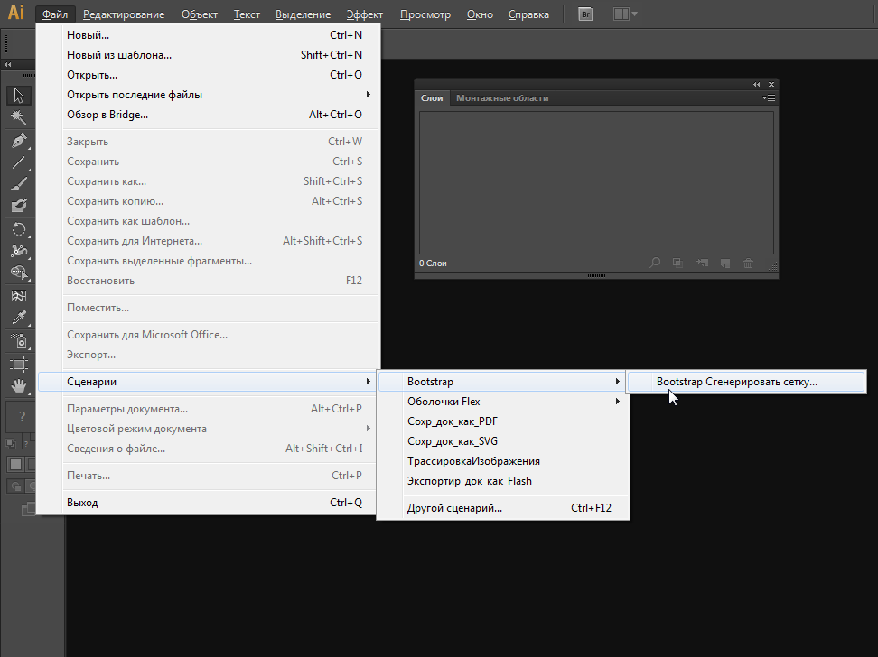
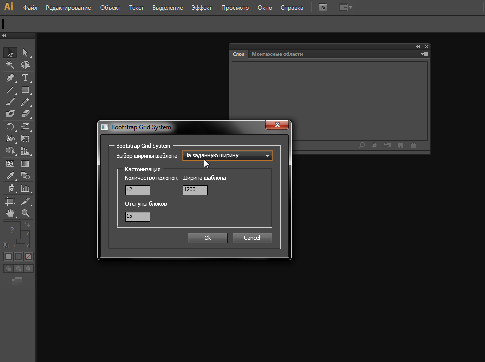
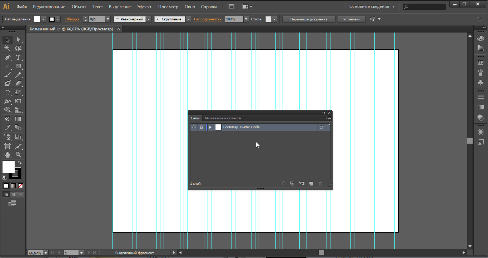

Preset Script Adobe Illustrator CS6/CC Bootstrap Grid System
Скрипт автоматизации создания сетки Bootstrap в Adobe Illustrator СS6 - CC
Протестировано на Windows 7, Mac
Установка на Windows XP/Vista/7 (64 Bit)
Путь установки для Adobe Illustrator CS6 (64 Bit) (русская локаль)
C:\Program Files\Adobe\Adobe Illustrator CS6 (64 Bit)\Presets\ru_RU\Сценарии\Bootstrap
Путь установки для Adobe Illustrator CS6 (32 Bit) (русская локаль)
C:\Program Files (x86)\Adobe\Adobe Illustrator CS6\Presets\ru_RU\Сценарии\Bootstrap
Запуск скрипта

Окно настроек

Результат работы скрипта
